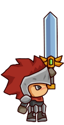

Master Vault
Arduino, back-end project
The Project.
recently I made a project that combines the world of physical computing with back-end development. The project involves
the creation of a safe mechanism controlled by an Arduino motor, which unlocks upon scanning the correct card. Using Node.js,
I arranged the communication between the Arduino motor and the card scanner. When the system recognizes the scanned card, it triggers the Arduino motor to rotate, opening the safe.
It was quite a challenge to merge the two sets of code: the motor rotation and the card scanning, because The approval logic for the card was developed in Node.js,
while the motor control code was written in the Arduino IDE. So I had to think of a way to transmit data from one program to another so that the motor could be activated with a successful card verification.
This combination required careful synchronization and data exchange between the Node.js environment and the Arduino IDE, eventually enabling flawless interaction between the physical and digital components of the project.
Coding the vault
Initially, I must admit, I didn't feel very excited about the project. I found myself swamped by the complexity, unsure of where to start or what steps to take. Despite watching over twenty instructional videos, I kept struggling to grasp the concepts.
After some help, I had my first breakthrough. We managed to send information to the Arduino – it wasn’t what we needed, but it was a step. What really helped me was that my teacher taught me how to research. When getting stuck or having a problem, or not knowing what to do, he explained to me how to look it up and go further. He told me that I shouldn't just copy and paste but taught me how to actually understand what was going on and how to shape it into my code. This newfound understanding transformed my perspective. I managed to read the information from the Arduino instead of sending it to it, and I began to feel a sense of pride in my progress. I found myself gaining invaluable knowledge and skills. I successfully merged the codes for the motor rotation and card scanning, achieving a flawless combination between physical and digital components. Reflecting on this journey, I'm immensely proud of how I navigated through the initial confusion and uncertainties, ultimately producing a project that exceeded my expectations.
